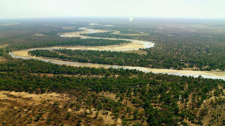

Stany na dzień 2022-05-05
| Wodomierz | Rzeka | Ostrzegawczy | Alarmowy | Aktualny |
|---|---|---|---|---|
| Lubań | Kwisa | 230 | 290 | 220 |
| Trzebnica | Odra | 450 | 500 | 480 |
Informacje
- Brak ostrzeżeń o burzach z gradem
- Smog w mieście Wrocław
- Silny wiatr w Karkonoszach
Średnie stany wód
2022-05-05: 167,854m³
2023-06-06: 175,982m³
Dowiedz się więcej 